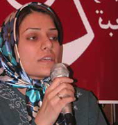

|
|
|
Browsing
Contact Us |
Campaigners |
Face to Face |
Tribune |
Interview |
News |
On the Web |
One Million |
Report
Farsi | Français | German | Italian | Spanish | العربية Also in this section
|
 No one signs for anotherSaturday 18 August 2007 By Somaiyeh Farid Translated by Roja Bandari I was taking the metro from Karaj to Tehran with my husband when I decided for the first time to speak to the men in the cabin about the campaign. As I walked through the cabin, a young couple caught my attention. I handed them the petition sheet and gave another sheet to a young man who was standing nearby. I asked the couple’s opinion first. The woman had really liked the petition but was waiting to see what her husband thought. The curious thing was that the man told his wife to sign but would not sign the petition himself. When I asked why, he said because it was against his rights! I told him about how these changes will make things better for men too, like in the case of Mehrieh, or issues related to a child’s healthcare, …. He still wasn’t convinced. “You should sign, but I won’t,” he told his wife. And his wife indeed signed the petition. Next I approached the young man standing nearby and we started a conversation that lasted 10 minutes. He was in favor of the general idea of the Campaign but he lamented that even the good laws that are currently in place don’t get enforced. He also thought that the high Mehriehs are because of competition. I told him that I thought we should first work together to make the laws equal and then we will work to ensure the enforcement of those laws. After debating for a long time he signed the petition and apologized for taking my time, “I took too much of the valuable time that you could have spent collecting more signatures.” I told him that the dialogue that is sparked is more important than the signatures. We got out of the Karaj metro and boarded the local city subway. There weren’t that many passengers on the train. There was a young man sitting by himself in front of us and my husband suggested that I hand him the petition. I was hesitant. I told my husband that I would if he does the talking. I held out the petition and said, “please read this if you have time.” He took it with some doubt and asked “what is it?” Although I had asked my husband to talk to him I now felt that if I didn’t answer the man personally, my credibility would be questioned. If I believe in myself and the things I say, I must stand up for them; so I went and sat next to the man and started to explain. He listened patiently for a few minutes and then asked, “Is this going to make any difference?” I told him, “It’s possible that none of the laws will change, but the campaign raises society’s awareness and our people’s sensitivity about these laws and that’s what makes a difference. It’s also important to show that after all, these changes are the demands of a million people.” He signed the petition. I thanked him, gave him a pamphlet and asked him to pass it on to his friends and family. When I returned to my seat, I saw that it was taken by someone else. My husband and I don’t like saving seats, so when I looked at him he shrugged and I laughed. I decided to use this opportunity to speak with a woman who was standing near me on the train. She signed the petition and took a pamphlet and began reading it. I put the rest of the papers in my bag and we departed the train at our stop. On the way back from Tehran, I went to the women’s cabin to collect more signatures. It was not long before the discussions started. One of the women mused while she was signing the petition, “nothing will happen. My husband has been missing for two months and when I went to the police they said ‘he is probably tired of you!’ No matter how hard I tried to explain that we didn’t have any problems in our relationship, they still wouldn’t look for him. They finally told me ‘there are 130 bodies in the morgue, you can take a look and see if he’s one of them, if he’s not then it’s none of our business!’” Another woman started defending the laws because they are Islamic. An older woman who was sitting with her daughter, responded by talking about her own legal problems, …. From time to time you hear something that, despite seeming ordinary, has a profound effect and you feel its impact lingering on for a long time. What I’m going to tell you right now has had this effect on me. These completely ordinary conversations from that day keep repeating in my head many times a day and sometimes bring a tear to my eyes. As the conversation in the cabin continued. The old woman’s daughter was writing her name down and signing the paper. Her mother, while gazing off in the distance said, “this woman (meaning me) is right,… You endure your husband’s poverty and support him through hardships but when he finally gets somewhere, he marries another woman.” I took the paper from her daughter and asked the old woman to sign. She looked at me and laughed, “I can’t read or write.” “It’s no problem, your daughter will write your name for you and you can sign,” I told her. The daughter wrote down her mother’s name and information and signed under her name! “Why did you sign?!” I asked. “What difference does it make?” she asked. “It makes a difference because no one can replace another person,” I told her. I crossed out the daughter’s signature and held out the paper for the old woman to sign. She took the paper and signed on the column next to the scratched off signature. It was one of the most valuable signatures I had ever collected. Forum posts:4 |